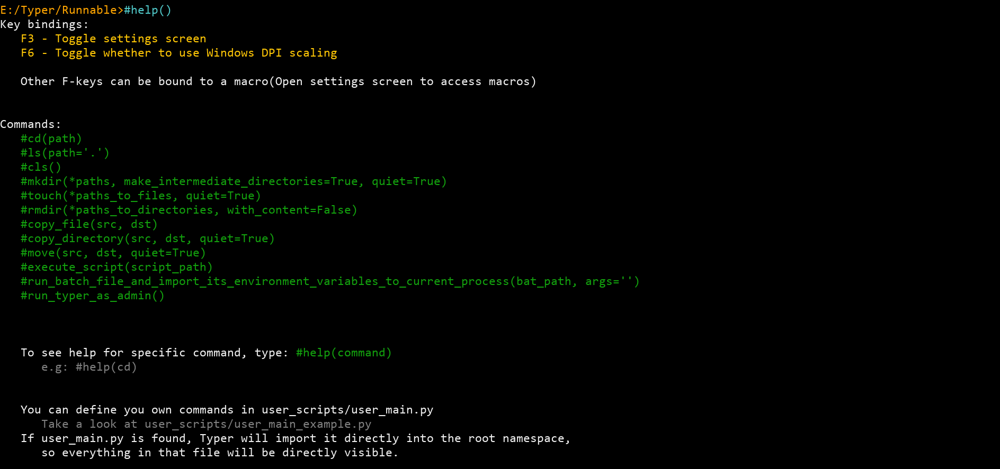
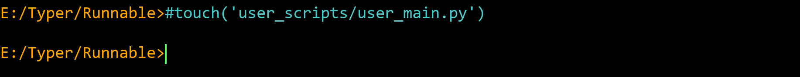
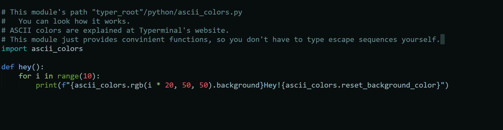
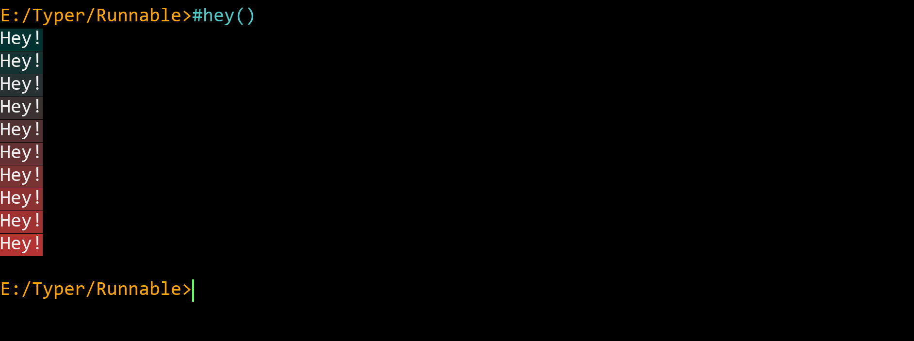

So the idea behind integrating Python is to switch from crappy shell languages
to more real-world programming language.
The way to pass string to Python interpreter is to prefix it with #.
help command example: As you can see string("#help()") is prefixed with #, which will pass "help()" to Python. And that will result in function help()(implemented in python/typer_commands.py) being called.
1) Create user_main.py
Assuming that working directory is Typerminal's root

2) Type code in user_main.py
Example source code of user_scripts/user_main.py

3) RESTART TYPERMINAL!!!, so it will (re)load user_scripts/user_main.py

My personal scripts: https://github.com/peppingdore/Typerminal_Workspace